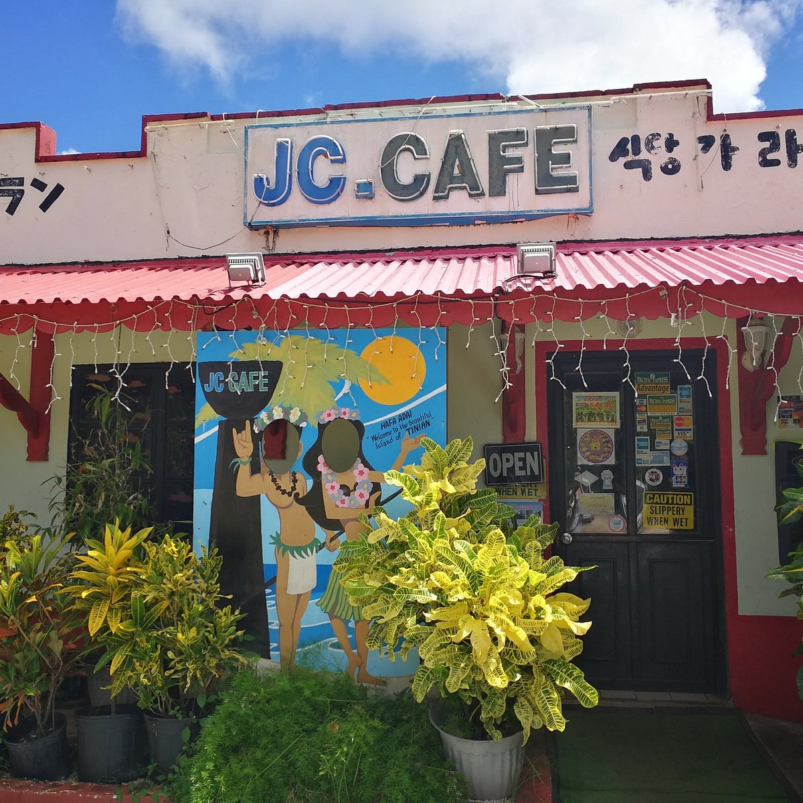

About JC Café
During the time I spent 2 weeks in Tinian JC Cafe was my go to. I fell in love with the large menu and generous portions. Although it is one of the few restaurants on the Islands, it holds up to be one of the best in my opinion.

3 Things I Love
- Chicken Katsudon
- Kimchi Fries
- Chicken
Contact Information
Restaurant: JC Café
Location: Saipan, Northern Mariana Islands
Phone: (670) 433-3413